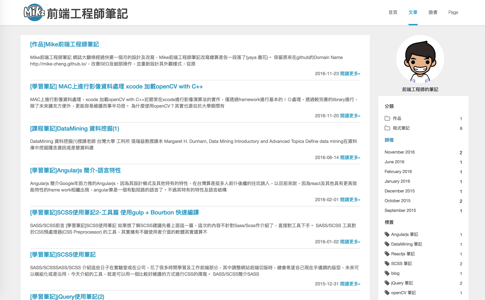

[作品]Mike前端工程師筆記
Mike前端工程師筆記 網誌大翻修
經過快要一個月的設計及改寫，Mike前端工程師筆記改寫總算是告一段落了(yaya 撒花)。
保留原來在github的Domain Name http://mike-zheng.github.io/，改善SEO及細部操作，並重新設計其外觀樣式，從原本半套版的結構翻成完全從設計切版重新開始的新界面。
從使用部落格初期，就有意思想要用自主的設計樣式裝潢外觀，就像以前使用無名小站那樣改css一樣，但總因為自主可能是設計概念不足或是切版工程浩大而退步。
趁著前一陣子抓完了寶可夢得到了空檔，手邊一堆程式擺著，心想著未來工作或是遇到的難題若無妥善記錄，未來重新遇到此難題又會卡一陣子，不如將筆記記錄下來的這種想法，將網誌重新翻修了一番。
之後也會將自己的作品一一加入，變成一個也富含作品創作的紀錄筆記。

hexo部落格引擎
Mike前端工程師筆位於一個靜態的空間，基本上裡面任何ＣＭＳ的操做都是在我client端完成，包含撰寫及編譯， 是基於hexo的部落格引擎所構成。https://hexo.io/zh-tw/
透過這一個核心引擎，自身就不用煩惱部落格文章撰寫及其自動化的功能，只要專心在寫作上就行了。
當然對於前端工程師，只是套個版用個cms引擎來玩玩這樣太不專業了，基本上介面執行及功能，都要因體驗而改善，透過重新設計版面來調整ＵＸ，再加入更多需要的元件（codehighlight 數學式等等），這才能是一個前端工程師網誌的需求。
這邊特別提一下mike前端工程師筆記是用 .ejs 及 .scss 作為模組化工具及預處理器，為什麼不挑 jade 或是 sass或是less呢？其實沒有絕對答案，只是因為scss辨識容易，容易與css相容，ejs雖然在巢狀繼承上有些問題，但容易識別開發上比較順眼僅此而已。
程式元件 syntaxhighlighter
npm install
gulp
設計
這次的設計用sketch先大致完成基本設計，才進行切版和程式開發，風格採用目前自家公司吉寶知識系統的materal design風格http://www.jibaoviewer.com/。
光是設計圖稿及排版工程都還沒開工，就花了一星期的時間來調整，最後問了多方意見，才在大至定稿後開工。
這邊不禁讓我想到某一次承接的案子，最後成品就是因為草草開工，導致於最後呈現的樣子自己不太滿意結果還是這樣結束了。
重點還是要再三達成體驗共識，並且有完善的prototype再與開工，這樣才不會到最後事與願違啊！！
這次的設計有把RWD(響應式網頁設計 Responsive Web Design)先納入考量，先考慮切換不同視窗大小的UX效果呈現及不同尺寸的樣式排列。
前端撰寫
開工其實花了我蠻多時間的，不光是切版上，還有未來擴充性的撰寫及程式模組化部分，這部分當然不是外部網站呈現看得到的，但是透過一些較好的模組化分類原則，未來維護及抽出元件來使用變得更加方便，大致就先講到這邊。
底下分享我所使用的工具插件jiathis 分享工具Disqus 文章評論插件syntaxhighlighter 程式上色工具bootstrap grid 欄格系統font-awesome 圖示fancybox 圖片容器